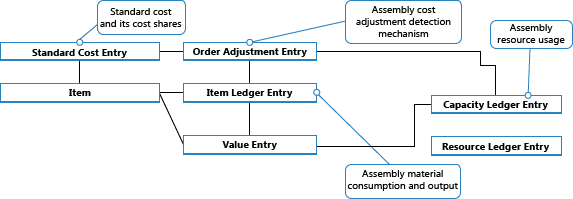

Designdetails: Kostenregulierung
Der vorrangige Zweck der Kostenregulierung besteht darin, Kostenänderungen von Kostenquellen zu Kostenempfängern weiterzuleiten, abhängig von der Kostenbewertungsmethode eines Artikels, um eine korrekte Lagerbewertung zu gewährleisten.
Ein Artikel kann für den Verkauf fakturiert werden, bevor er für den Einkauf fakturiert wurde, so dass der aufgezeichnete Bestandswert des Verkaufs nicht den tatsächlichen Einkaufskosten entspricht. Die Kostenregulierung aktualisiert die Kosten der verkauften Waren (COGS) für historische Verkaufsposten, um sicherzustellen, dass diese den Kosten der eingehenden Transaktionen entsprechen, auf die sie angewendet werden. Weitere Informationen finden Sie unter Designdetails: Artikelverfolgung.
Die folgenden sind sekundäre Zwecke oder Funktionen der Kostenregulierung.
Faktuierung beendeter FA
- Ändern des Status von Wertposten von Soll zu Ist.
- WIP-Konten löschen. Weitere Informationen finden Sie unter Designdetails: Produktionsauftragsbuchung.
- Buchen der Abweichung. Weitere Informationen finden Sie unter Designdetails: Abweichung
- Aktualisieren Sie den Einstandspreis auf der Artikelkarte.
Bestandskosten müssen reguliert werden, bevor die zugehörigen Wertposten mit der Finanzbuchhaltung abgestimmt werden können. Weitere Informationen finden Sie unter Designdetails: Abstimmung mit der Finanzbuchhaltung.
Erkennen der Regulierung
Die Aufgabe zum Erkennen, ob Kostenregulierung auftreten sollte, wird hauptsächlich durch die Routine "Artikelposten – Zeile buchen" ausgeführt, während die Aufgabe zum Berechnen und Generieren von Kostenanpassungeinträgen durch die Stapelverarbeitung Lagerreg. fakt. Einst. Preise ausgeführt wird.
Damit Kosten weitergeleitet werden können, bestimmt der Erkennungsmechanismus, welche Quellen sich in den Kosten geändert haben und an welches Ziel diese Kosten weitergeleitet werden sollen. Die folgenden drei Untersuchungsfunktionen sind in Business Central vorhanden:
- Artikelausgleichsposten
- Eingabepunkt Regulierung Durchschnittskosten
- Auftragesebene
Artikelausgleichsposten
Diese Entdeckungsfunktion wird für Artikel verwendet wird, die FIFO, LIFO, Standardkosten und bestimmte Bewertungsmethoden verwenden und für Szenarien mit festen Ausgleichen. Die Feldfunktionen funktionieren wie folgt:
- Kostenregulierung wird erkannt, indem die Herkunftsanlagenposten als Ausgegl. Posten regul. markiert werden, wenn ein Artikelposten oder ein Wertposten gebucht wird.
- Die Kostenweiterleitung tritt gemäß den Kostenketten auf, die in der Tabelle Artikelanwendungseintrag erfasst werden.
Eingabepunkt Regulierung Durchschnittskosten
Diese Entdeckungsfunktion wird für Artikel verwendet, die die Bewertungsmethode "Durchschnitt" verwenden. Die Feldfunktionen funktionieren wie folgt:
- Kostenregulierung wird erkannt, indem ein Datensatz in der Tabelle Durchschnittlicher Kostenanpassungs-Einstiegspunkt markiert wird, sobald ein Wertposten gebucht wird.
- Kostenweiterleitung tritt auf, wenn die Kosten auf Wertposten mit einem späteren Bewertungsdatum angewendet werden.
Auftragesebene
Diese Entdeckungsfunktion wird in Konvertierungsszenarien, Produktion und Montage verwendet. Die Feldfunktionen funktionieren wie folgt:
- Kostenregulierung wird erkannt, indem der Auftrag markiert wird, sobald eine Ressource oder ein Werkstoff als verbraucht/verwendet gebucht wird.
- Die Kostenweiterleitung entsteht durch Anwenden der Kosten aus dem Werkstoff oder der Ressource auf die Ausstoßposten, die mit dem Auftrag verknüpft sind.
Die Auftragsebenenfunktion wird verwendet, um Regulierungen bei der Montagebuchung zu erkennen. Die folgende Grafik zeigt die Regulierungspostenstruktur:

Weitere Informationen finden Sie unter Designdetails: Montageauftragsbuchung.
Manuelle gegen Automatische Lagerregulierung
Die Kostenregulierung kann auf zwei Arten ausgeführt werden:
- Manuell durch Ausführen der Stapelverarbeitung Kostenanpassung Artikelposten Stapelverarbeitung. Sie können diese Stapelverarbeitung entweder für alle Artikel oder nur für bestimmte Artikel oder Artikelkategorien ausführen. Dieser Stapelauftrag führt eine Kostenregulierung für die Artikel im Lager durch, für die eine eingehende Transaktion, etwa ein Einkauf, erstellt wurde. Für Artikel, die die Kostenberechnungsmethode Durchschnitt verwenden, nimmt die Stapelverarbeitung auch eine Regulierung vor, wenn ausgehende Transaktionen erstellt werden.
- Automatisch, indem die Kosten jedes Mal angepasst werden, wenn Sie eine Lagertransaktion buchen, und wenn Sie einen Fertigungsauftrag schließen. Die Kostenregulierung wird nur für den speziellen Artikel oder die Artikel ausgeführt, die von der Buchung betroffen sind. Dieses ist eingerichtet, wenn Sie das Kontrollkästchen Automatische Lagerregulierung auf der Seite Lager Einrichtung auswählen.
Es ist sinnvoll, die Kostenregulierung automatisch auszuführen, wenn Sie buchen, da VK-Preise häufiger aktualisiert werden und daher präziser sind. Der Nachteil besteht darin, dass die Leistung der Datenbank beeinflusst werden kann, wenn die Kostenregulierung so oft ausführt wird.
Da es wichtig ist, den Einstandspreis eines Artikels auf dem neuesten Stand zu halten, wird empfohlen, dass Sie die Stapelverarbeitung Kosten anpassen Artikeleinträge so häufig wie möglich ausführen, außerhalb der Kernarbeitszeiten. Oder verwenden Sie die automatische Kostenregulierung. Dadurch wird gewährleistet, dass der Einstandspreis für Artikel täglich aktualisiert wird.
Unabhängig davon, ob Sie die Kostenregulierung manuell oder automatisch erstellt wurde, der Regulierungsvorgang und seine Auswirkungen sind identisch. Business Central berechnet den Wert der eingehenden Transaktion und übergibt diese Kosten an alle ausgehenden Vorgängen, wie Verkaufs- oder Verbrauch, die mit der eingehenden Transaktion ausgeglichen wurden. Die Kostenregulierung erstellt Wertposten, die Ausgleichsbeträge und Beträge enthalten, die die Rundung kompensieren.
Die neuen Ausgleichs- und Rundungswertposten haben das Buchungsdatum der zugehörigen Rechnung. Ausnahmen sind, wenn die Wertposten in eine geschlossene Buchhaltungsperiode oder Lagerbuchhaltungsperiode fallen, oder wenn das Buchungsdatum vor dem Datum im Buchen ab zulassen-Feld auf der Seite Finanzbuchhaltunge einrichten liegt. Wenn dies auftritt, weist die Stapelverarbeitung das Buchungsdatum als erstes Datum der nächsten offenen Periode zu.
Lagerreg. fakt. Einst. Preise (Stapelverarbeitung)
Wenn Sie die Stapelverarbeitung Kostenanpassung Artikeleinträge anpassen, haben Sie die Möglichkeit, den Batchauftrag für alle Artikel oder nur für bestimmte Artikel oder Kategorien zu aktivieren.
Hinweis
Es ist empfehlenswert, immer die Stapelverarbeitung für alle Artikel ausführen und die Filteroption nur zu verwenden, um die Laufzeit der Stapelverarbeitung zu verringern, oder die Kosten eines bestimmten Artikels zu korrigieren.
Beispiel
Im folgenden Beispiel wird veranschaulicht, wie Sie einen Artikel als am 01-01-20 empfangen und fakturiert buchen. Sie buchen den verkauften Artikel später als geliefert und am 01-15-20 fakturiert. Anschließend müssen Sie die Batchaufträge Einstandspreisregulierung Artikelposten und Lagerregulierung zu GL ausführen. Die folgenden Einträge werden folgendermaßen erzeugt:
Wertposten (1)
| Buchungsdatum | Artikelpostenart | Einstandsbetrag (tatsächl.) | Gebuchte Lagerregulierung an G/L | Fakturierte Menge | Lfd. Nr. |
|---|---|---|---|---|---|
| 01-01-20 | Einkauf | 10,00 | 10,00 | 1 | 1 |
| 01-15-20 | Verkauf | -10.00 | -10.00 | -1 | 2 |
Relationsposten im Sachkonto – Tabelle Artikelpostenrelation (1)
| Sachposten Lfd. Nr. | Wertposten Lfd. Nr. | Fibujournalnr. |
|---|---|---|
| 1 | 1 | 1 |
| 2 | 1 | 1 |
| 3 | 2 | 1 |
| 4 | 2 | 1 |
Sachposten (1)
| Buchungsdatum | Sachkonto | Kontonr. (En-US-Demo) | Betrag | Eingabenr. |
|---|---|---|---|---|
| 01-01-20 | [Lagerkonto] | 2130 | 10,00 | 1 |
| 01-01-20 | [Direkte Kosten Verrech.-Konto] | 7291 | -10.00 | 2 |
| 01-15-20 | [Lagerkonto] | 2130 | -10.00 | 3 |
| 01-15-20 | [COGS-Konto] | 7290 | 10,00 | 4 |
Später buchen Sie einen zugehörigen Einkaufsartikelzuschlag für 2,00 MW fakturiert auf 02-10-20. Anschließend müssen Sie die Batchaufträge Einstandspreisregulierung Artikelposten und Lagerregulierung zu GL buchen ausführen. Die Stapelverarbeitung zur Kostenregulierung passt die Kosten des Verkaufs entsprechend um -2,00 MW an, und die Stapelverarbeitung Bestandkosten an Sachkonto buchen bucht die neuen Wertposten in die Finanzbuchhaltung. Das Ergebnis ist wie folgt definiert:
Wertposten (2)
| Buchungsdatum | Artikelpostenart | Einstandsbetrag (tatsächl.) | Gebuchte Lagerregulierung an G/L | Fakturierte Menge | Ausgleich | Lfd. Nr. |
|---|---|---|---|---|---|---|
| 02-10-20 | Einkauf | 2.00 | 2.00 | 0 | Nein | 3 |
| 01-15-20 | Verkauf | -2.00 | -2.00 | 0 | Ja | 4 |
Relationsposten im Sachkonto – Tabelle Artikelpostenrelation (2)
| Sachposten Lfd. Nr. | Wertposten Lfd. Nr. | Fibujournalnr. |
|---|---|---|
| 5 | 3 | 2 |
| 6 | 3 | 2 |
| 7 | 4 | 2 |
| 8 | 4 | 2 |
Sachposten (2)
| Buchungsdatum | Sachkonto | Kontonr. (En-US-Demo) | Betrag | Eingabenr. |
|---|---|---|---|---|
| 02-10-20 | [Lagerkonto] | 2130 | 2.00 | 5 |
| 02-10-20 | [Direkte Kosten Verrech.-Konto] | 7291 | -2.00 | 6 |
| 01-15-20 | [Lagerkonto] | 2130 | -2.00 | 7 |
| 01-15-20 | [COGS-Konto] | 7290 | 2.00 | 8 |
Automatische Kostenregulierung
Um einzurichten, dass Kostenregulierung automatisch ausgeführt wird, wenn Sie eine Lagertransaktion buchen, verwenden Sie das Feld Automatische Kostenanpassung auf der Seite Bestand-Einrichtugn. Dieses Feld ermöglicht Ihnen, auszuwählen, wie weit zurück vom aktuellen Arbeitsdatum die automatische Lagerregulierung ausgeführt werden soll. Folgende Optionen sind verfügbar.
| Option | Description |
|---|---|
| Nie | Kosten werden beim Buchen nicht reguliert. |
| Tag | Kosten werden reguliert, wenn die Buchung innerhalb eines Tages ab dem Arbeitsdatum erfolgt. |
| Woche | Kosten werden reguliert, wenn die Buchung innerhalb einer Woche ab dem Arbeitsdatum erfolgt. |
| Monat | Kosten werden reguliert, wenn die Buchung innerhalb eines Monats ab dem Arbeitsdatum erfolgt. |
| Quartal | Kosten werden reguliert, wenn die Buchung innerhalb eines Quartals ab dem Arbeitsdatum erfolgt. |
| Jahr | Kosten werden reguliert, wenn die Buchung innerhalb eines Jahres ab dem Arbeitsdatum erfolgt. |
| Immer | Kosten werden beim Buchen immer reguliert, unabhängig vom Buchungsdatum. |
Die Auswahl, die Sie im Feld Automatische Kostenanpassung vornehmen, ist wichtig für die Leistung und die Korrektheit Ihrer Kosten. Kürzere Perioden, wie etwa Tag oder Woche, beeinflussen die Systemleistung weniger, da sie die strengere Anforderung haben, dass nur am letzten tag oder in der letzten Woche gebuchte Kosten automatisch reguliert werden können. Dies bedeutet, dass die automatische Kostenregulierung nicht so häufig ausgeführt wird und daher die Systemleistung weniger beeinträchtigt wird. Dies bedeutet jedoch auch, dass VK-Preise möglicherweise weniger genau sind.
Beispiel
Das folgende Beispiel zeigt ein automatisches Kostenbewertungsszenario:
- Am 10. Januar buchen Sie einen Artikel als geliefert und fakturiert.
- Am 15. Januar buchen Sie einen Verkaufsauftrag für den als geliefert und fakturiert gebuchten Artikel.
- Am 5. Februar erhalten Sie eine Rechnung für Frachtkosten in der ursprünglichen Einkaufsrechnung. Sie buchen diese Frachtkosten und wenden diese auf die ursprüngliche Einkaufsrechnung an, wodurch die Kosten des ursprünglichen Einkaufs erhöht werden.
Wenn Sie die automatische Kostenregulierung so eingerichtet haben, dass Buchungen angewendet werden, die innerhalb eines Monats oder eines Quartals ab dem aktuellen Arbeitstag angewendet werden, wird die automatische Kostenregulierung ausgeführt, und die Kosten des Einkaufs werden an den Verkauf weitergeleitet.
Wenn Sie die automatische Kostenregulierung so eingerichtet haben, dass Buchungen angewendet werden, die innerhalb eines Tages oder einer Woche ab dem aktuellen Arbeitstag angewendet werden, wird die automatische Kostenregulierung nicht ausgeführt, und die Kosten des Einkaufs werden nicht an den Verkauf weitergeleitet, bis Sie die Stapelverarbeitung Kosten anpassen Artikeleinträgeausführen.
Siehe auch
Artikelpreise justieren
Designdetails: Lagerkostenberechnung
Designdetails: Abgleich mit der Finanzbuchhaltung
Designdetails: Bestandsbuchung
Designdetails: Abweichung
Designdetails: Montageauftragsbuchung
Designdetails: Fertigungsauftragsbuchung
Verwalten der Bestandsregulierung
Finanzen
Arbeiten mit Business Central
Kostenlose E-Learning-Module für Business Central finden Sie hier